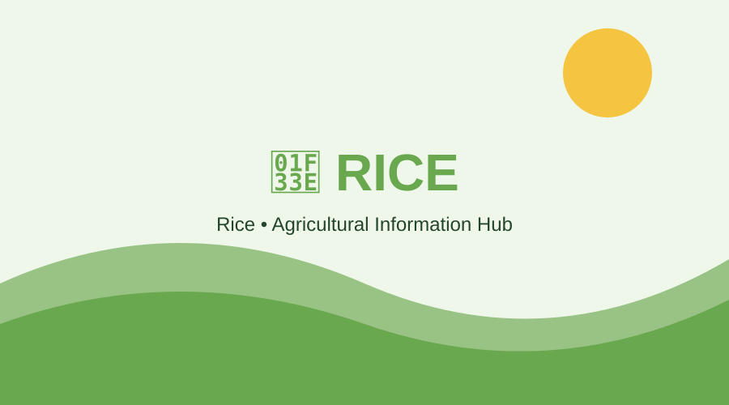
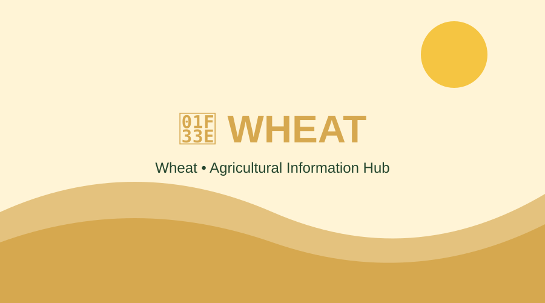
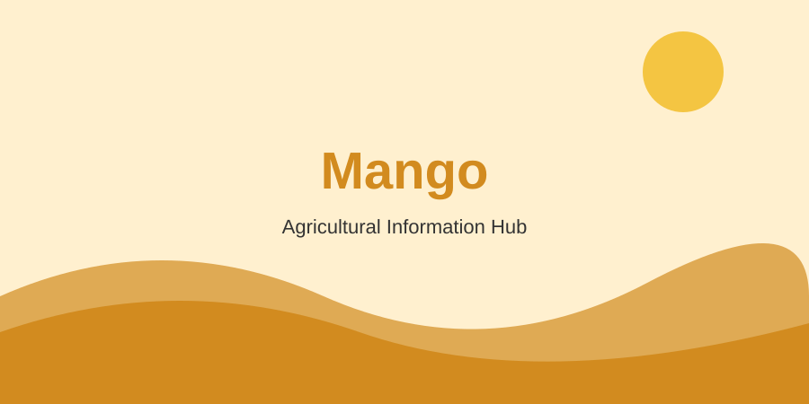
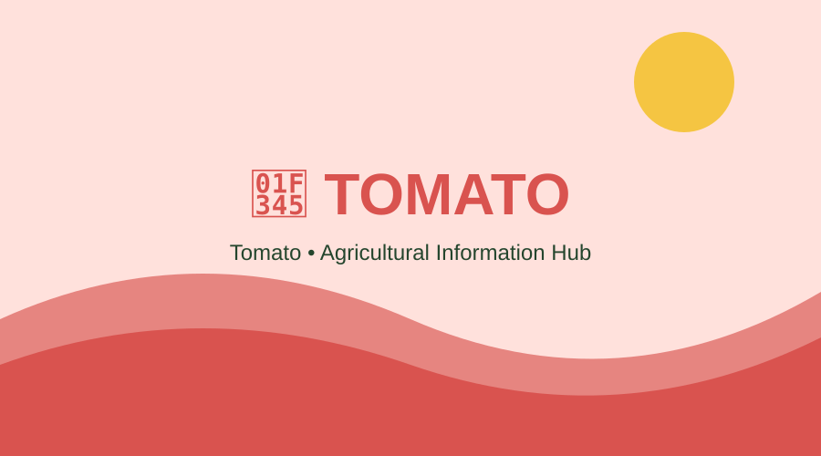
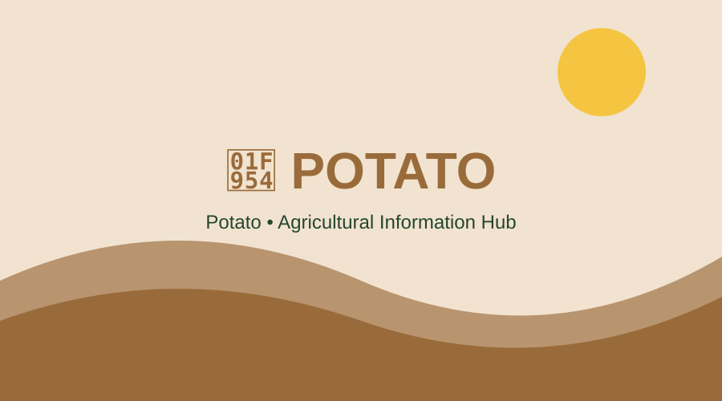
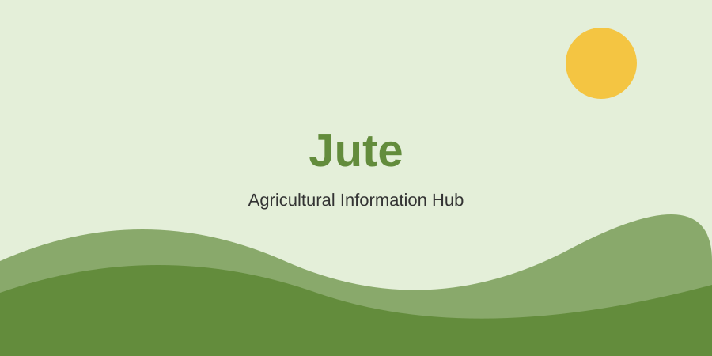

Grains

Rice
Varieties: Aman, Aus and Boro.
Soil: Fertile soil with suitable water availability.
Cultivation: Prepare land, plant seedlings and manage water and nutrients.
Harvest: Harvest when grains are mature.
Uses: Food, rice products and animal feed.
Nutrition: Mainly carbohydrates with some protein and micronutrients.

Wheat
Varieties: Choose varieties suitable for the local climate.
Soil: Fertile and well-drained soil.
Cultivation: Prepare soil, sow seeds and manage nutrients and water.
Harvest: Harvest when plants become golden and grains mature.
Uses: Flour, bread, noodles and animal feed.
Nutrition: Provides carbohydrates, protein and fiber.
Fruits

Mango
Soil: Fertile and well-drained soil.
Cultivation: Plant healthy grafted trees and maintain suitable spacing.
Harvest: Pick mature fruits carefully.
Uses: Fresh fruit, juice, pickle and desserts.
Nutrition: Contains vitamin C, vitamin A precursors and fiber.
Banana
Soil: Deep, fertile and well-drained soil.
Cultivation: Plant healthy suckers or suitable planting material.
Harvest: Harvest bunches at suitable maturity.
Uses: Fresh fruit, cooking and processed foods.
Nutrition: Provides carbohydrates, potassium and fiber.
Vegetables

Tomato
Soil: Fertile and well-drained soil.
Cultivation: Raise healthy seedlings and transplant into prepared beds.
Harvest: Harvest according to maturity and intended use.
Uses: Cooking, salads, sauces and processing.
Nutrition: Contains vitamin C, potassium and lycopene.

Potato
Soil: Loose, fertile and well-drained soil.
Cultivation: Plant healthy seed tubers and manage soil moisture.
Harvest: Harvest when tubers reach suitable maturity.
Uses: Cooking, snacks and processed foods.
Nutrition: Provides carbohydrates, potassium and vitamin C.
Cash Crops

Jute
Soil: Fertile soil with suitable moisture.
Cultivation: Prepare seedbed, sow quality seeds and control weeds.
Harvest: Harvest at a suitable stage for fiber quality.
Uses: Bags, ropes, textiles and natural-fiber products.
Nutrition: Mainly a fiber crop, not a food crop.